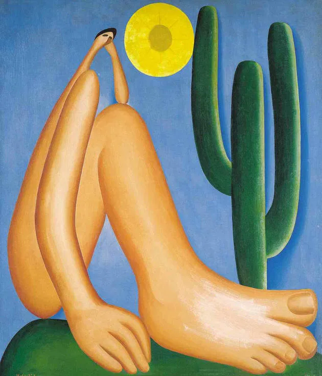

A obra Abaporu é uma das pinturas mais icônicas da arte brasileira, criada por Tarsila do Amaral em 1928 como um presente de aniversário para seu marido na época, o escritor Oswald de Andrade. A obra é considerada o marco inicial do movimento antropofágico, que propunha a ideia de "devorar" culturalmente influências estrangeiras para transformá-las em algo genuinamente brasileiro.